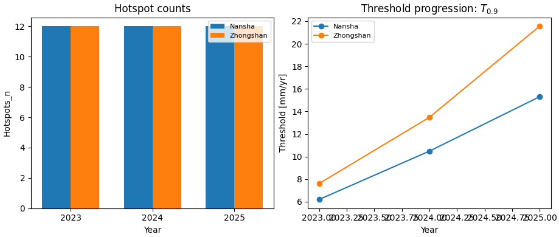

Note
Go to the end to download the full example code.
Compute hotspot summary tables from forecast CSVs#
This example teaches you how to use GeoPrior’s
compute-hotspots utility.
Unlike the figure-generation scripts, this command is an artifact builder. It reads evaluation and future forecast CSVs, compares future annual subsidence against a baseline year, and writes one compact hotspot summary table per city and year.
Why this matters#
Forecast maps can look dramatic, but downstream reporting usually needs a much more compact artifact.
This builder converts forecast CSVs into a tidy hotspot table with:
the number of hotspots,
hotspot subsidence ranges,
hotspot anomaly ranges relative to the baseline year,
the baseline mean,
and the percentile threshold used to define hotspots.
That makes it a strong lesson page for the
tables_and_summaries gallery.
Imports#
We call the real production builder, then read its outputs back in and build one compact teaching preview.
from __future__ import annotations
import tempfile
from pathlib import Path
import matplotlib.pyplot as plt
import numpy as np
import pandas as pd
import geoprior._scripts.compute_hotspots as hotspots_mod
Compatibility shim#
The current script forwards prog=... into parse_args(),
but the helper does not yet accept that keyword.
For the lesson page, we patch the helper locally so the example stays runnable. Once the script itself is patched, this shim can be removed.
_orig_parse_args = hotspots_mod.parse_args
def _parse_args_compat(
argv: list[str] | None = None,
*,
prog: str | None = None,
):
return hotspots_mod.build_parser(prog=prog).parse_args(argv)
hotspots_mod.parse_args = _parse_args_compat # type: ignore[assignment]
Build compact synthetic cumulative forecast archives#
The production builder can work from:
explicit per-city eval and future CSVs,
or auto-discovered city source folders.
For a self-contained lesson page, we use explicit CSVs.
We generate:
Nansha
Zhongshan
with:
eval years 2021 and 2022,
future years 2023, 2024, and 2025,
cumulative subsidence columns,
and a stronger hotspot trend in Zhongshan.
This is useful because the production script’s default mode for this builder is often:
baseline year = 2022
subsidence kind = cumulative
hotspot quantile = q50
hotspot threshold = 90th percentile of anomaly magnitude
rng = np.random.default_rng(7)
eval_years = [2021, 2022]
future_years = [2023, 2024, 2025]
n_samples = 120
def _city_frames(
*,
city: str,
level_shift: float,
hotspot_boost: float,
) -> tuple[pd.DataFrame, pd.DataFrame]:
rows_eval: list[dict[str, object]] = []
rows_future: list[dict[str, object]] = []
hotspot_ids = set(range(16))
for sample_idx in range(n_samples):
spatial = 4.5 * np.sin(sample_idx / 11.0)
local = rng.normal(0.0, 1.4)
annual_2021 = 24.0 + level_shift + 0.7 * spatial + local
annual_2022 = 31.0 + level_shift + 0.9 * spatial + local
is_hot = sample_idx in hotspot_ids
hot_term = hotspot_boost if is_hot else 0.0
annual_2023 = (
annual_2022
+ 3.2
+ 0.6 * hot_term
+ rng.normal(0.0, 1.2)
)
annual_2024 = (
annual_2023
+ 2.6
+ 0.8 * hot_term
+ rng.normal(0.0, 1.2)
)
annual_2025 = (
annual_2024
+ 1.8
+ 1.0 * hot_term
+ rng.normal(0.0, 1.2)
)
# Build cumulative paths.
q50_cum_2021 = annual_2021
q50_cum_2022 = q50_cum_2021 + annual_2022
q50_cum_2023 = q50_cum_2022 + annual_2023
q50_cum_2024 = q50_cum_2023 + annual_2024
q50_cum_2025 = q50_cum_2024 + annual_2025
# Eval actuals are slightly noisy but remain monotone.
act_annual_2021 = max(
1.0,
annual_2021 + rng.normal(0.0, 0.9),
)
act_annual_2022 = max(
1.0,
annual_2022 + rng.normal(0.0, 1.0),
)
act_cum_2021 = act_annual_2021
act_cum_2022 = act_cum_2021 + act_annual_2022
def _q_band(center: float, width: float) -> tuple[float, float]:
return max(0.0, center - width), center + width
# Eval rows.
for year, q50, actual, width in [
(2021, q50_cum_2021, act_cum_2021, 6.5),
(2022, q50_cum_2022, act_cum_2022, 7.5),
]:
q10, q90 = _q_band(q50, width)
rows_eval.append(
{
"city": city,
"sample_idx": sample_idx,
"coord_t": year,
"subsidence_actual": float(actual),
"subsidence_q10": float(q10),
"subsidence_q50": float(q50),
"subsidence_q90": float(q90),
"subsidence_unit": "mm",
}
)
# Future rows.
for year, q50, width in [
(2023, q50_cum_2023, 9.0),
(2024, q50_cum_2024, 10.5),
(2025, q50_cum_2025, 12.0),
]:
q10, q90 = _q_band(q50, width)
rows_future.append(
{
"city": city,
"sample_idx": sample_idx,
"coord_t": year,
"subsidence_q10": float(q10),
"subsidence_q50": float(q50),
"subsidence_q90": float(q90),
"subsidence_unit": "mm",
}
)
return pd.DataFrame(rows_eval), pd.DataFrame(rows_future)
ns_eval_df, ns_future_df = _city_frames(
city="Nansha",
level_shift=0.0,
hotspot_boost=4.0,
)
zh_eval_df, zh_future_df = _city_frames(
city="Zhongshan",
level_shift=5.5,
hotspot_boost=7.0,
)
print("Nansha eval preview")
print(ns_eval_df.head(6).to_string(index=False))
print("")
print("Nansha future preview")
print(ns_future_df.head(6).to_string(index=False))
Nansha eval preview
city sample_idx coord_t subsidence_actual subsidence_q10 subsidence_q50 subsidence_q90 subsidence_unit
Nansha 0 2021 23.592519 17.501722 24.001722 30.501722 mm
Nansha 0 2022 53.602594 47.503444 55.003444 62.503444 mm
Nansha 1 2021 24.811028 17.870170 24.370170 30.870170 mm
Nansha 1 2022 56.619791 48.322046 55.822046 63.322046 mm
Nansha 2 2021 23.507364 18.217157 24.717157 31.217157 mm
Nansha 2 2022 54.929641 49.097050 56.597050 64.097050 mm
Nansha future preview
city sample_idx coord_t subsidence_q10 subsidence_q50 subsidence_q90 subsidence_unit
Nansha 0 2023 82.963661 91.963661 100.963661 mm
Nansha 0 2024 123.894913 134.394913 144.894913 mm
Nansha 0 2025 169.557454 181.557454 193.557454 mm
Nansha 1 2023 85.482181 94.482181 103.482181 mm
Nansha 1 2024 127.851667 138.351667 148.851667 mm
Nansha 1 2025 175.276583 187.276583 199.276583 mm
Write the lesson inputs#
The production builder consumes CSV files, so we follow the real workflow exactly.
tmp_dir = Path(
tempfile.mkdtemp(prefix="gp_sg_hotspots_")
)
ns_eval_csv = tmp_dir / "nansha_eval.csv"
ns_future_csv = tmp_dir / "nansha_future.csv"
zh_eval_csv = tmp_dir / "zhongshan_eval.csv"
zh_future_csv = tmp_dir / "zhongshan_future.csv"
ns_eval_df.to_csv(ns_eval_csv, index=False)
ns_future_df.to_csv(ns_future_csv, index=False)
zh_eval_df.to_csv(zh_eval_csv, index=False)
zh_future_df.to_csv(zh_future_csv, index=False)
print("")
print("Input files")
for p in [
ns_eval_csv,
ns_future_csv,
zh_eval_csv,
zh_future_csv,
]:
print(" -", p.name)
Input files
- nansha_eval.csv
- nansha_future.csv
- zhongshan_eval.csv
- zhongshan_future.csv
Run the real hotspot builder#
We ask the production command to:
use 2022 as the baseline year,
interpret the inputs as cumulative subsidence,
use actual values for the baseline when available,
summarize 2023, 2024, and 2025,
and export both CSV and LaTeX.
The result is one compact city × year table.
out_stem = tmp_dir / "hotspots_gallery"
hotspots_mod.compute_hotspots_main(
[
"--ns-eval",
str(ns_eval_csv),
"--ns-future",
str(ns_future_csv),
"--zh-eval",
str(zh_eval_csv),
"--zh-future",
str(zh_future_csv),
"--baseline-year",
"2022",
"--percentile",
"90",
"--subsidence-kind",
"cumulative",
"--baseline-source",
"actual",
"--quantile",
"q50",
"--years",
"2023",
"2024",
"2025",
"--format",
"both",
"--out",
str(out_stem),
],
prog="compute-hotspots",
)
Inspect the produced artifacts#
The builder writes:
one CSV summary table,
one LaTeX sidewaystable.
That is the core artifact family for this command.
written = sorted(tmp_dir.glob("hotspots_gallery*"))
print("")
print("Written files")
for p in written:
print(" -", p.name)
Written files
- hotspots_gallery.csv
- hotspots_gallery.tex
Read the generated hotspot table#
This is the main output users will usually inspect first.
tab_csv = tmp_dir / "hotspots_gallery.csv"
tab_tex = tmp_dir / "hotspots_gallery.tex"
tab = pd.read_csv(tab_csv)
print("")
print("Hotspot summary table")
print(tab.to_string(index=False))
print("")
print("LaTeX preview")
for line in tab_tex.read_text(encoding="utf-8").splitlines()[:12]:
print(line)
Hotspot summary table
City Year Hotspots_n s_hot_min s_hot_mean s_hot_max d_hot_mean d_hot_max mean_2022 T_0p9
Nansha 2023 12 31.940758 39.018544 44.050700 7.177913 10.376893 31.330260 6.195595
Nansha 2024 12 42.128229 45.358374 47.509734 12.368278 14.138522 31.330260 10.484602
Nansha 2025 12 47.162541 50.803310 53.786371 17.813214 19.787534 31.330260 15.317294
Zhongshan 2023 12 40.102181 45.189025 50.698997 8.803999 12.030016 36.940475 7.610475
Zhongshan 2024 12 50.952166 54.660977 60.087007 15.714578 18.120024 36.940475 13.483212
Zhongshan 2025 12 60.081469 63.803275 69.733969 24.621551 27.766986 36.940475 21.580201
LaTeX preview
\begin{sidewaystable}[p]
\centering
\caption{Characteristics of forecast hotspot clusters. Hotspots are defined as locations where the absolute change in annual subsidence relative to 2022 exceeds the 90th percentile threshold $T_{0.9}$ within each city and year.}
\label{tab:hotspots}
\begin{tabular}{llrccccccc}
\toprule
& & & \multicolumn{3}{c}{Hotspot subsidence $s_{\mathrm{hot}}$} & \multicolumn{2}{c}{Hotspot anomaly $|\Delta s_{\mathrm{hot}}|$ vs.\ 2022} & Mean 2022 subsidence & $T_{0.9}$ \\
City & Year & Hotspots & \multicolumn{3}{c}{(mm yr$^{-1}$)} & \multicolumn{2}{c}{(mm yr$^{-1}$)} & (mm yr$^{-1}$) & (mm yr$^{-1}$) \\
\cmidrule(lr){4-6} \cmidrule(lr){7-8}
& & $n$ & min & mean & max & mean & max & & \\
\midrule
Nansha & 2023 & 12 & 31.9 & 39.0 & 44.1 & 7.2 & 10.4 & 31.3 & 6.2 \\
Show how cumulative inputs become annual series#
This builder supports both:
rate / increment data, where annual values are already present,
cumulative data, where annual values must be reconstructed.
For cumulative inputs, the script uses:
baseline annual 2022 = cumulative_2022 - cumulative_2021
annual 2023 = future_2023 - cumulative_2022
annual 2024 = future_2024 - future_2023
annual 2025 = future_2025 - future_2024
Below is a concrete one-sample demonstration for Nansha.
demo_sid = 0
ev0 = ns_eval_df.loc[
ns_eval_df["sample_idx"] == demo_sid
].sort_values("coord_t")
fu0 = ns_future_df.loc[
ns_future_df["sample_idx"] == demo_sid
].sort_values("coord_t")
cum_2021 = float(
ev0.loc[ev0["coord_t"] == 2021, "subsidence_actual"].iloc[0]
)
cum_2022 = float(
ev0.loc[ev0["coord_t"] == 2022, "subsidence_actual"].iloc[0]
)
fut_2023 = float(
fu0.loc[fu0["coord_t"] == 2023, "subsidence_q50"].iloc[0]
)
fut_2024 = float(
fu0.loc[fu0["coord_t"] == 2024, "subsidence_q50"].iloc[0]
)
fut_2025 = float(
fu0.loc[fu0["coord_t"] == 2025, "subsidence_q50"].iloc[0]
)
annual_demo = pd.DataFrame(
{
"year": [2022, 2023, 2024, 2025],
"annual_value_mm": [
cum_2022 - cum_2021,
fut_2023 - cum_2022,
fut_2024 - fut_2023,
fut_2025 - fut_2024,
],
}
)
print("")
print("Annual conversion demo for one sample")
print(annual_demo.to_string(index=False))
Annual conversion demo for one sample
year annual_value_mm
2022 30.010076
2023 38.361067
2024 42.431251
2025 47.162541
Build one compact visual preview#
This preview is not part of the production builder itself. It is a teaching aid for the gallery page.
- Left:
hotspot counts by year and city.
- Right:
the threshold T_0p9 by year and city.
fig, axes = plt.subplots(
1,
2,
figsize=(9.2, 3.9),
constrained_layout=True,
)
# Hotspot counts by year and city
ax = axes[0]
cities = ["Nansha", "Zhongshan"]
years = sorted(tab["Year"].unique())
x = np.arange(len(years))
w = 0.35
for i, city in enumerate(cities):
vals = []
for year in years:
sub = tab.loc[
(tab["City"] == city) & (tab["Year"] == year),
"Hotspots_n",
]
vals.append(float(sub.iloc[0]) if not sub.empty else np.nan)
ax.bar(
x + (i - 0.5) * w,
vals,
width=w,
label=city,
)
ax.set_title("Hotspot counts")
ax.set_xlabel("Year")
ax.set_ylabel("Hotspots_n")
ax.set_xticks(x)
ax.set_xticklabels([str(y) for y in years])
ax.legend(fontsize=8)
# Threshold progression
ax = axes[1]
for city in cities:
sub = tab.loc[tab["City"] == city].sort_values("Year")
ax.plot(
sub["Year"].to_numpy(int),
sub["T_0p9"].to_numpy(float),
marker="o",
label=city,
)
ax.set_title(r"Threshold progression: $T_{0.9}$")
ax.set_xlabel("Year")
ax.set_ylabel("Threshold [mm/yr]")
ax.legend(fontsize=8)

<matplotlib.legend.Legend object at 0x000002952F67AB00>
Learn how to read the table#
Each row is one:
city
year
combination.
The most important columns are:
Hotspots_n: how many locations exceeded the anomaly threshold;s_hot_*: the subsidence range among hotspot points;d_hot_*: the anomaly range among hotspot points;mean_2022: the city-wide baseline annual mean for 2022;T_0p9: the percentile threshold used to define the hotspots.
So the table is not a geometry layer. It is the compact numerical summary that later reporting pages or figures can build on.
What the hotspot rule means#
For each city and year, the builder computes:
the annual baseline series for 2022,
the annual forecast series for the requested year,
the absolute anomaly:
Then it marks hotspots where that anomaly exceeds the chosen percentile threshold.
With the default percentile of 90, this means the most anomalous ~10 percent of valid locations become hotspots for that city-year.
Why cumulative vs rate mode matters#
This script supports two data conventions.
rateorincrementthe CSV values are already annual values.
cumulativethe CSV values are cumulative totals, so the script first converts them back to annual increments before any hotspot calculation.
That makes the builder useful for both:
already-annual forecast archives,
and future forecast exports stored in cumulative form.
Why the baseline source matters#
The baseline year can come from:
actual: use observed 2022 subsidence when available;q50: use the median forecast from the eval CSV.
In practice:
actualis better when the eval archive includes observations;q50is a useful fallback when the builder is used on a purely predictive archive.
Why this command belongs in tables_and_summaries#
This builder is a bridge between raw forecast CSVs and later presentation layers.
A useful workflow is:
generate or calibrate the forecast CSVs,
build the hotspot summary table,
inspect counts and thresholds by city and year,
only then move on to hotspot maps or narrative reporting.
That separation keeps:
forecast generation,
summary tabulation,
and visualization
clearly distinct.
Command-line version#
The same lesson can be reproduced from the CLI.
Legacy dispatcher:
python -m scripts compute-hotspots \
--ns-eval results/nansha_eval.csv \
--ns-future results/nansha_future.csv \
--zh-eval results/zhongshan_eval.csv \
--zh-future results/zhongshan_future.csv \
--baseline-year 2022 \
--subsidence-kind cumulative \
--quantile q50 \
--years 2023 2024 2025 \
--format both \
--out tab_hotspots
Modern CLI:
geoprior build hotspots \
--ns-eval results/nansha_eval.csv \
--ns-future results/nansha_future.csv \
--zh-eval results/zhongshan_eval.csv \
--zh-future results/zhongshan_future.csv \
--baseline-year 2022 \
--subsidence-kind cumulative \
--quantile q50 \
--years 2023 2024 2025 \
--format both \
--out tab_hotspots
Auto-discovery by city source folder:
geoprior build hotspots \
--ns-src results/nansha_run \
--zh-src results/zhongshan_run \
--baseline-year 2022 \
--n-years 2 \
--format csv
The gallery page teaches the builder. The command line reproduces it in a workflow.
Total running time of the script: (0 minutes 1.252 seconds)